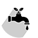

 <nav class = "navbar navbar-expand-sm" style = "background-color: #228B22;" >
        <button class="navbar-toggler" type="button" data-toggle="collapse" data-target="#Navbar">
        	<span class="navbar-toggler-icon"></span>
        </button>
      	<a class="navbar-brand" href="home.php" style = "color: white; font-family: cambria; position: relative; bottom: 18px;">
     		
        </a>
    	<div class="collapse navbar-collapse" id="Navbar">
      		<ul class="navbar-nav">
        		<li class="nav-item">
          			<a class="nav-link" href="novaPlantacao.php" style = "color: white;">Nova plantação</a>
        		</li>
        		<li class="nav-item">
          			<a class="nav-link" href="perfilUsuario.php" style = "color: white;">Perfil</a>
        		</li>
        		<li class="nav-item">
          			<a class="nav-link" href="#" style = "color: white;">Ajuda</a>
        		</li>
                <li class="nav-item">
                    <a class="nav-link" href="#" style= "color: white;" data-toggle="modal" data-target="#modalSair">Sair</a>                   
                        
                        <div class="modal fade" id="modalSair" role="dialog">
                            <div class="modal-dialog">
                                        <!-- Modal content-->
                                <div class="modal-content">
                                    
                                    <div class="modal-header">
                                        <h4 class="modal-title">Deseja se desconectar?</h4>
                                        <button type="button" class="close" data-dismiss="modal">&times;</button>
                                    </div>
                                    
                                    <div class="modal-body">
                                        <p>Caso desconecte você precisará efetuar login novamente para acessar o sistema!</p>
                                    </div>
                                    
                                    <div class="modal-footer">
                                        <button type="button" class="btn btn-default" data-dismiss="modal">Cancelar</button>
                                        <a class="btn btn-danger" href="php_logoutUsu.php" role="button">Desconectar</a>
                                    </div>
                                    
                                </div>
                            </div>
                        </div>
                </li>			 			     		
     		</ul>
     	</div>
    </nav>
